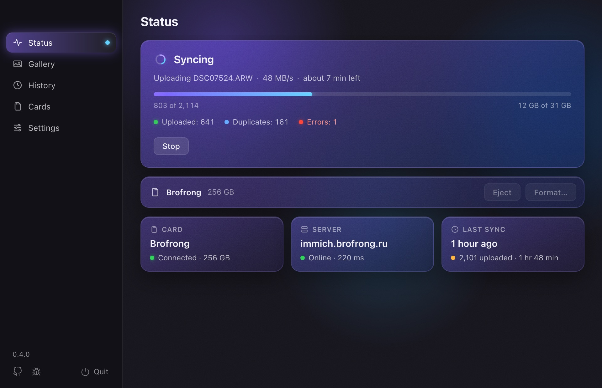
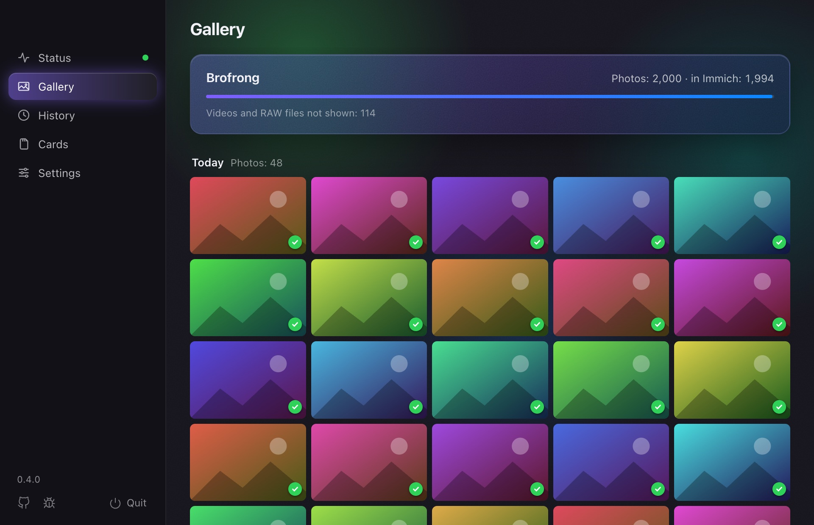

A small app in the menu bar notices your camera's card and uploads only the new photos. No more remembering which shot you uploaded last.
Download macOS, Windows and Linux
Set it up once, then just insert the card.
Enter your server's address and an API key once, and pick the card to sync.
The upload starts by itself. What is already in Immich is skipped.
When everything is uploaded, the card is ejected. Go shoot some more.
The Gallery tab shows the photos on the card by day, newest first, with a badge on each: in Immich, uploading, or waiting.
Click a photo to see it large and flip through with the arrow keys. Handy for showing someone the shoot right away.

Built for a big card after a day of shooting.
Each card has its own progress. Next time only the new photos go up.
Checks the file date and checksum, as immich-go does.
Network gone or the server down? It stops and picks up where it left off.
The formats Immich takes, with XMP sidecars, uploaded in parallel.
Ejected after the upload. If you like, formatted once every file is checked in Immich.
Lives in the menu bar or tray, can start at login, updates itself. 8 languages.
From the Immich tools you may already use.
Backs up your phone. SD Sync Immich is for the camera's card: no copying the shots to the phone first.
Command-line tools, great for big imports like a Google Photos takeout. SD Sync Immich is for the everyday card: insert it, and what is new goes up.
It talks only to your Immich server, and to GitHub for updates. No analytics, no accounts.
If it saves you time, star it on GitHub: that is how other Immich users find it. Issues and pull requests are welcome.